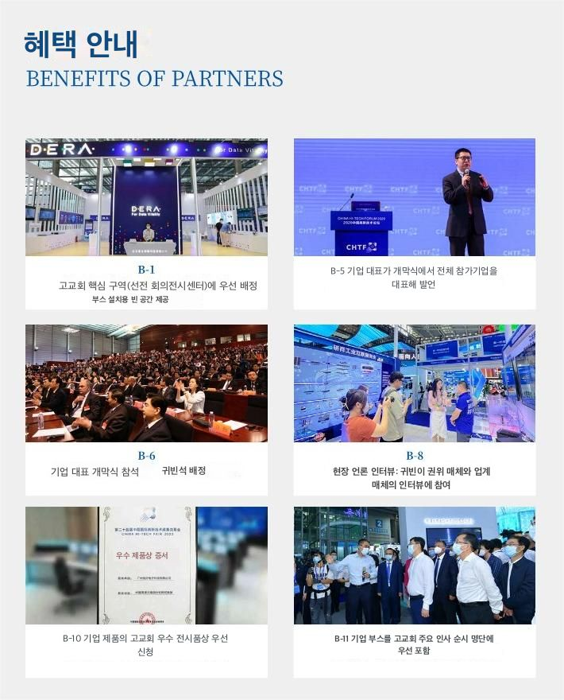
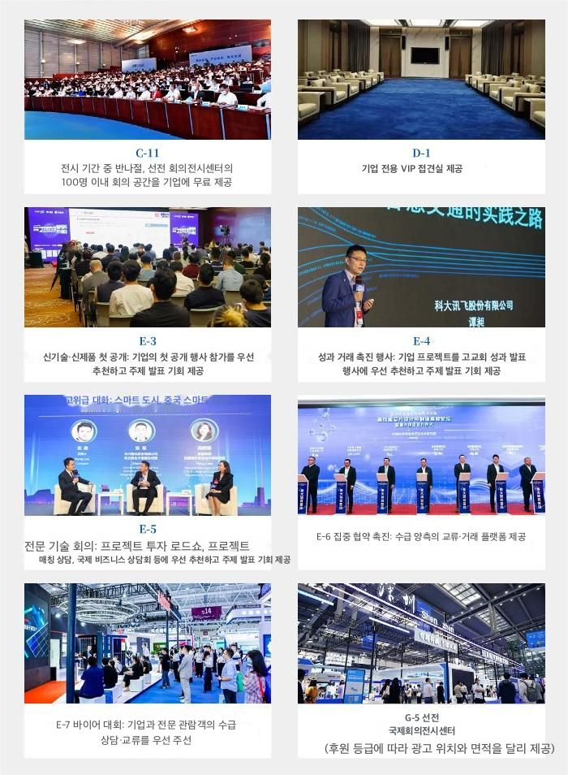
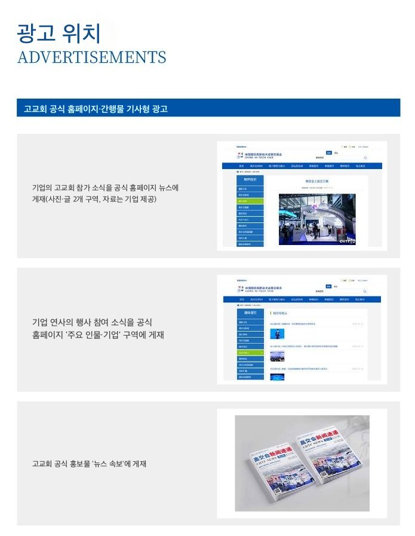
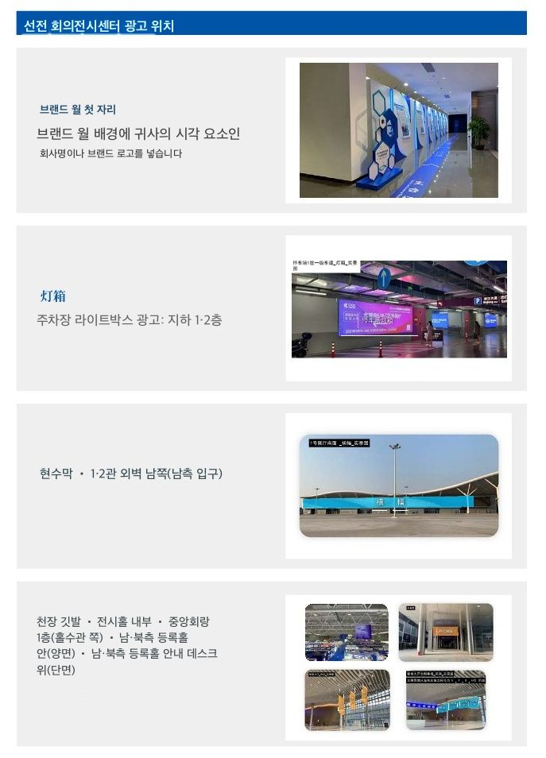
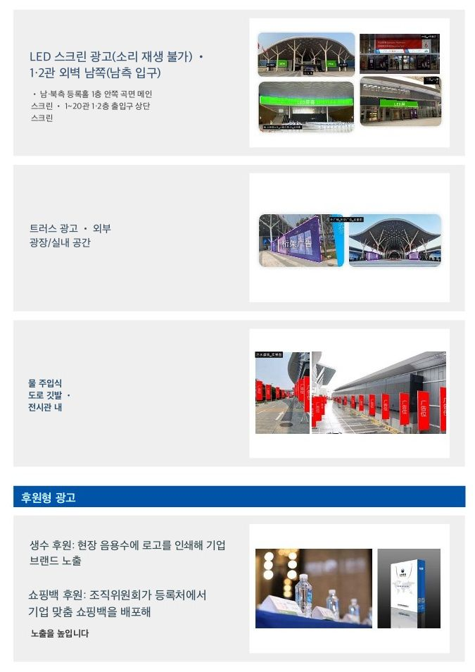

협찬·제휴
협찬·제휴로 함께 얻는 가치
1. 상호 이익
고교회의 고급 브랜드를 바탕으로 비즈니스 리더층의 인지도를 높이고, 다양한 매체로 노출을 늘리며, 광고 전달과 대중과의 소통을 함께 이룰 수 있습니다.
2. 주요 혜택
고급 브랜드 신뢰도 확보
• 브랜드 격을 높이고 비즈니스 리더층의 인지도 확대
• 제품의 국제화 추진
폭넓은 영향력
• 브랜드 인지도와 평판 향상
• 고급 고객층의 브랜드 인정 확대 지원
소통 플랫폼 구축
• 제품·서비스와 참석자, 언론, 대중을 잇는 소통 창구
우수 브랜드 이미지 형성
• 제품·서비스의 신뢰도와 친근감 제고
3. 협력 파트너
이번 고교회에는 세계 100여 개 국가·지역과 약 400개 국제기구의 내빈이 찾고, 세계 500대 기업과 업계 선도기업의 본사 임원도 참가합니다.
공식 파트너가 되면 좋은 사회적 이미지를 쌓고, 중국 과학기술 혁신에서 맡은 역할과 사회적 책임을 보여 줄 수 있습니다.
'중국 과학기술 제1전' 선전 고교회의 휘장과 명칭을 광고·마케팅에 활용해 브랜드 가치를 높이고, 세계적 기업과 빠르게 관계를 맺어 글로벌 시장을 넓힐 수 있습니다.
4. 연락처
담당자: 쑨 선생님 18389700001




